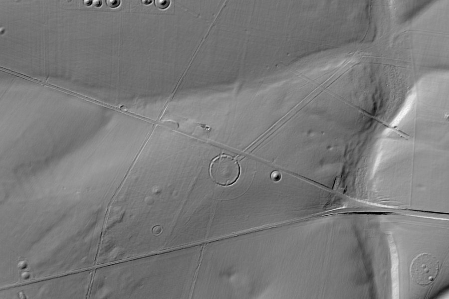

Fifteen national laser surveys in one zoomable map, over a shaded relief of the whole Earth. Take away the trees, the crops and the buildings and the ground underneath is full of things: hillforts in forests, Roman mines, the craters of the First World War and the scars of landslides.
Dr Tristan Hotham · Independent researcher · 2026 · Data: Environment Agency; IGN France; Digitaal Vlaanderen; AHN; swisstopo; Kartverket; USGS 3DEP; GSI Japan; and seven more national agencies; Esri World Hillshade
Lidar is a laser fired from an aircraft hundreds of thousands of times a second. Each pulse bounces back from whatever it hits, and the time it takes gives a height. Most pulses hit leaves, roofs or crops, but some slip through the gaps to the ground. Keep only those and you have the bare earth, a model of the land as if every tree and building had been lifted off. Light it from one side and every bank, ditch and hollow casts a shadow.
Many countries have now flown lidar over all or most of their land, and more and more publish the results openly. This map joins fifteen of them that publish a shaded version a web page can load directly, and fills the rest of the world with a global shaded relief. Zoom in to any of the outlined places and the national lidar takes over. Below the map are 23 places where it shows something you would walk straight past.
Loading the map. It needs JavaScript and WebGL.
Relief
Choose countries
Compare
On the map
Shaded relief loaded live from each publisher (credits under the map and in the table below). World shaded relief: Esri World Hillshade. Place names: OpenStreetMap contributors via OpenFreeMap. The square button at the top right fills the screen; the Layers button chooses what to show, and Tilt into 3D raises the land.
01 · What you are looking atFifteen surveys and one world
Far out, the map is a shaded relief of the whole planet, the same image used in many online maps, built from the best elevation its makers could gather: satellite radar in most places, and national lidar where they had it. The dashed orange lines mark the places with a national lidar layer of their own. Zoom past about level 9 (a county or so on screen) and the national layer is drawn on top, with the light coming from the north-west as on almost every relief map. The box at the bottom left says which survey you are looking at.
The detail is not the same everywhere. Flanders publishes a shading at a quarter of a metre; France, the Netherlands and Switzerland at half a metre; England, Norway, Slovenia and the German states at a metre. The United States has lidar at about a metre over most of the country and coarser elevation elsewhere. Spain and Japan publish shadings made from grids of a few metres, made largely from laser surveys. The Netherlands is the odd one out: its service shows height in colour, not shade, which suits a country where the highest ground for miles may be a dyke.
Plenty of countries have flown lidar and do not appear here. Scotland, Wales, Ireland, Denmark, Sweden, Finland and New Zealand all have national lidar and let anyone download it. But they either publish no shaded version, publish it only for use with a key, or serve it in a way a web page elsewhere is not allowed to load. In those places the map falls back to the world relief.
02 · The gallery23 places the lasers see better than we do
Every place below is on the map with a number. Press Show on map to fly there, then try the Aerial photo on top layer to see how little of it shows from the air.

1Stonehenge and its barrows
Wiltshire, England · England lidar
Strip away the grass and the stones are the least of it. The bank and ditch round the circle are older than the stones, the Avenue runs off towards the River Avon, and round barrows crowd the ridges on every side. The long, straight Stonehenge Cursus, older again, crosses the downs to the north.
The Roman fort of Vercovicium sits on the crags of the Whin Sill. South of the Wall the Vallum, a great ditch between two banks dug by the Romans, runs as a double line across the fields.
One of the largest Iron Age hillforts in Europe. Lidar shows the rings of ramparts and ditches as clearly as from the air, and the twisting entrances at each end, built so attackers had to walk a maze under the walls.
A field of hollows in the heath, each one the filled-in top of a Neolithic flint mine. More than 400 shafts were dug here about 4,500 years ago to reach the best flint, deep in the chalk.
A medieval village that was abandoned around 1500, when its fields were turned over to sheep. The house plots and the strips of ridge and furrow left by medieval ploughs still show in the grass.
An Iron Age hillfort reused by Romans, Saxons and Normans, who built a castle in the middle and a cathedral beside it. In the 13th century the cathedral moved down to the new Salisbury and the old town slowly emptied, leaving its banks.
On 7 June 1917 British tunnellers fired 19 mines under the German lines along the Messines Ridge. Most of the craters are still there, round ponds among the fields; the one at Spanbroekmolen is called the Pool of Peace. Lidar shows its lip of thrown-up earth as a ring.
A low spoil heap from a railway cutting that both sides fought for from 1914 to 1918, tunnelling beneath it and blowing it apart. Lidar shows a hill turned inside out by craters.
The battle of Verdun in 1916 churned this ground with millions of shells. Much of it was too dangerous to farm and was planted with forest. Under the trees, lidar shows every crater, trench and fort as if the guns had only just stopped.
In April 1917 the Canadian Corps took this ridge in one of the set-piece attacks of the First World War. The memorial park round the Canadian monument keeps the ground as the battle left it, and under the trees lidar shows shell holes lying lip to lip.
Before the dykes, people in Friesland lived on mounds they built by hand to keep above the tides. Hogebeintum is the highest left, rising out of land that is otherwise almost perfectly flat.
One of the largest Celtic towns north of the Alps. Its wall ran for about 7 km in a near-perfect circle; parts of it still stand, and lidar picks up the rest of the ring across the fields and the airfield.
A Celtic hillfort and later oppidum above the Vltava, south of Prague. Its ramparts and terraces lie in woodland, where lidar sees them better than anyone walking through.
On 2 September 1806 a slab of the Rossberg slid into the valley and buried the village of Goldau, killing 457 people. The scar on the mountain and the rough tongue of rubble below are still plain from above.
The Karst plateau gave the world the word karst. Rain dissolves the limestone from below, so the land is pocked with sinkholes, and at Škocjan two of them are great collapse dolines above one of the largest underground canyons known.
The most important gold mine in the Roman Empire. Roman engineers brought rivers here in channels and used the water to bring down whole hillsides, leaving these red pinnacles and a landscape of tailings and canals.
An oppidum of the Treveri, a Celtic people, on a plateau above the Chiers. Its earth ramparts still run round the edge of the plateau, and lidar traces them through the woods and fields.
A keyhole-shaped burial mound about 486 m long, the largest in Japan, attributed to the Emperor Nintoku and built in the 5th century. It is closed to the public; its moats and wooded mound are clearest from above.
The largest city north of Mexico before Columbus, at its height around 1100. Monks Mound, made of earth carried by hand in baskets, is the largest prehistoric earthwork in the Americas; smaller mounds stand round it.
Six concentric C-shaped ridges and a great bird-shaped mound, built about 3,400 years ago by people who lived by hunting, fishing and gathering. The ridges are low, and easiest to see without the grass.
On 22 March 2014 a hillside above the North Fork Stillaguamish River gave way, burying a neighbourhood and killing 43 people. Lidar flown before the slide showed older landslides here, but few had looked.
On 18 May 1980 the north face of the volcano collapsed in the largest landslide on record and the blast flattened forest for miles. The horseshoe crater, the new dome inside it and the debris below are clearer in lidar than in any photograph.
03 · Reading the shadowsWhy the light comes from the top left
Shaded relief is an illusion: a flat image of a surface lit by a lamp that is never there. Mapmakers have put the lamp in the north-west, at the top left of the map, for well over a century, because our eyes expect light to come from above. Put the light at the bottom and many people see hills as hollows and valleys as ridges. Every layer here keeps the convention, so a bank throws its shadow to the bottom right and a ditch is dark on its top-left side.
That has a side effect. A bank or ditch running from the top left to the bottom right is lit along its length and casts almost no shadow, so it can vanish. Archaeologists working with lidar usually look at several lightings, or at measures that do not depend on the light at all, such as slope or how much of the sky each point can see. The services here each choose their own lamp; Bavaria's, for one, is an oblique light, kept low to pick out small rises in the ground.
04 · How I made thisAsking each country for its own pictures
Nothing on the map is copied or stored. The page asks each agency's own open map service for shaded relief images as you pan and zoom, using the standard web map formats (WMS and WMTS) that public agencies publish, and draws them with MapLibre. For each one I checked that it serves images to other websites, that the licence allows reuse, and what it really shows. Each national layer is clipped to an outline of its country or region from Natural Earth, so that the map only asks a service for places it covers.
Where layers come only in colour, I turned them grey (Luxembourg) or kept the colour and said so (the Netherlands). The world relief behind is Esri's World Hillshade. The 3D view uses the open AWS Terrain Tiles, which are much coarser than lidar, so the tilt shows the lie of the land, not the earthworks. The gallery was written by hand; each note was checked against its Wikipedia article and the place checked on the map.